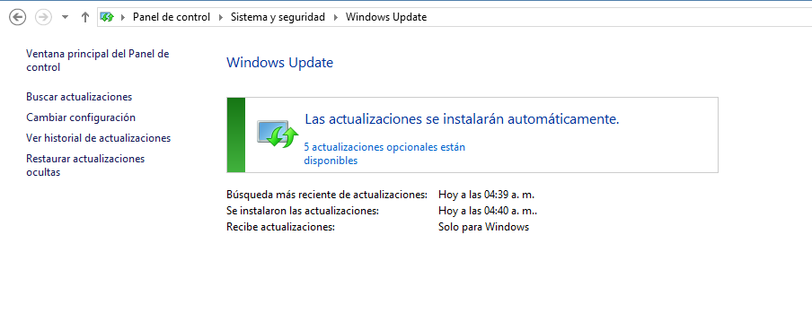
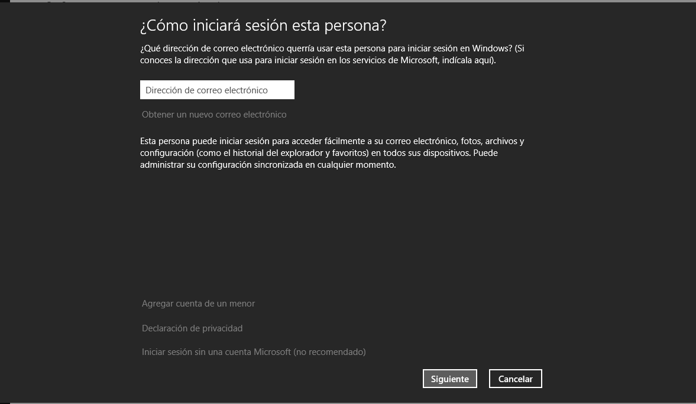
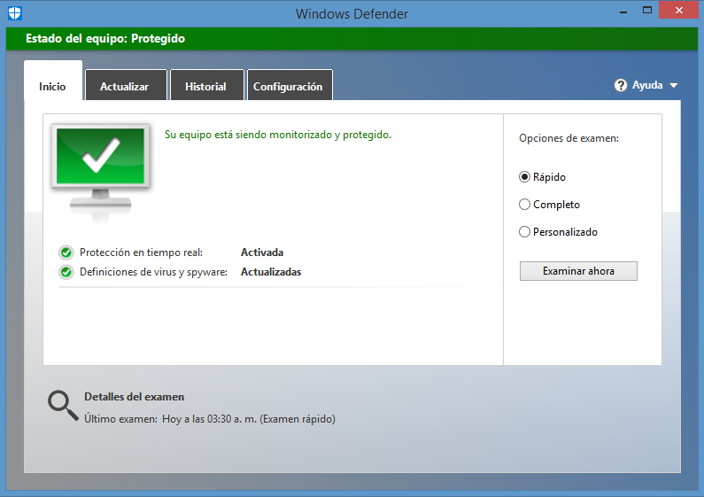

Windows hace tiempo que ha dejado de ser ese sistema operativo expuesto a todo tipo de amenazas informáticas, para convertirse en un sistema operativo razonablemente seguro. En Windows 8.1 Microsoft ha profundizado en sus esfuerzos por reforzar la seguridad, tanto en el ámbito doméstico como en el corporativo.
Mantener nuestro sistema operativo actualizado es una de las mejores formas de mantenerlo seguro. Microsoft libera a través de su programa de actualizaciones un buen número de parches y correcciones para posibles amenazas a la seguridad de nuestro sistema. Basta con que invirtamos cinco minutos para revisar el estado deWindows Updateen nuestro panel de control.
Desde la llegada de Windows 8, Microsoft anima a sus usuarios a utilizar cuentas de Microsoft en vez de mantener la gestión de usuarios únicamente en modo local. Utilizar este tipo de cuenta nos permite sincronizar aplicaciones y nuestras preferencias de sistema entre varios dispositivos Windows, de una forma muy similar a lo que hace Apple con su Apple ID o Google.
Microsoft Security Essentials fue la respuesta de Microsoft al competitivo mercado de antivirus y está disponible para Windows Vista y Windows 7. El producto fue descontinuado con la llegada de Windows 8 y en realidad, se integró en Windows Defender.
Si bien Windows Defender no es una maravilla de la seguridad informática, el Firewall que integra por defecto Windows 8.1 se comporta razonablemente bien. Eso sí, si la solución antivirus que hemos escogido también incluye Firewall deberemos escoger cuál de los dos queremos utilizar, ya que no suele ser una buena idea trabajar con dos Firewalls a la vez.
El Firewall de Windows nos permite configurar perfiles públicos y privados de modo que podemos indicar por ejemplo, que una aplicación sí puede conectarse con nuestra red local, pero no puede en cambio conectarse a Internet. Sin duda alguna proporciona muy buena seguridad a nuestro sistema operativo